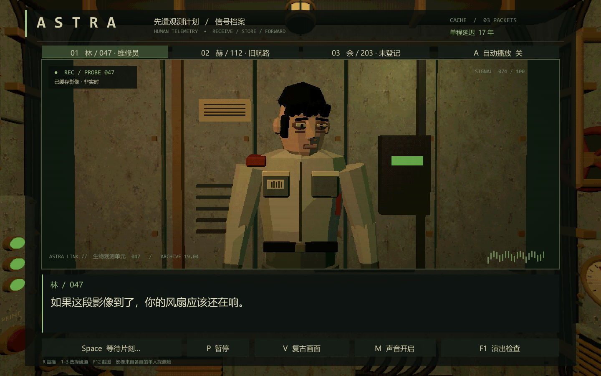
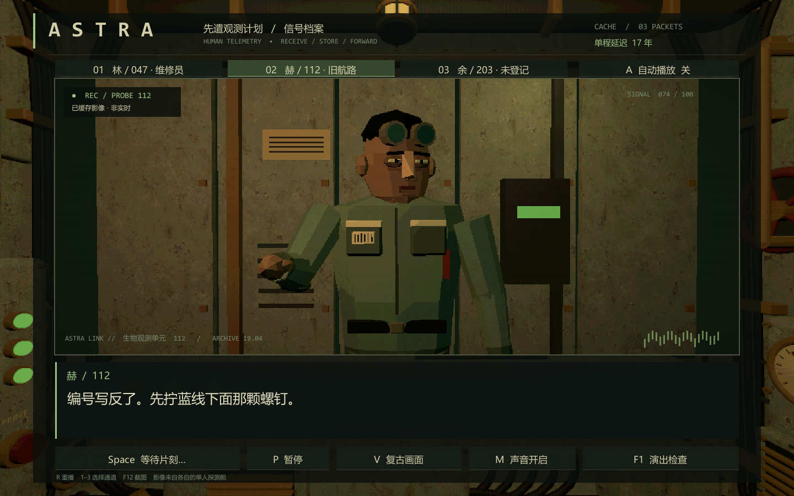
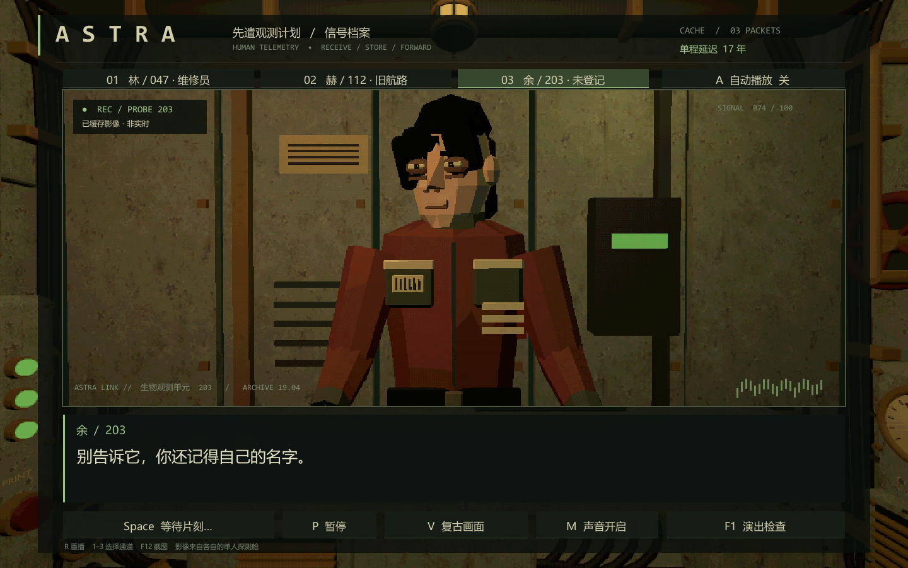
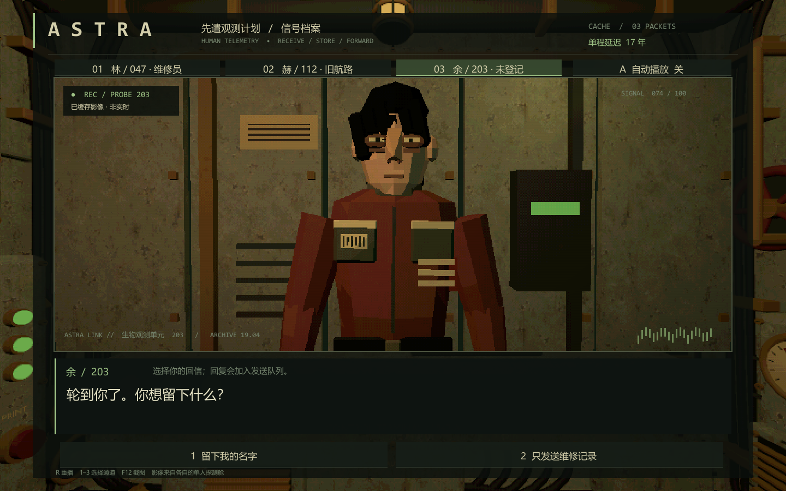
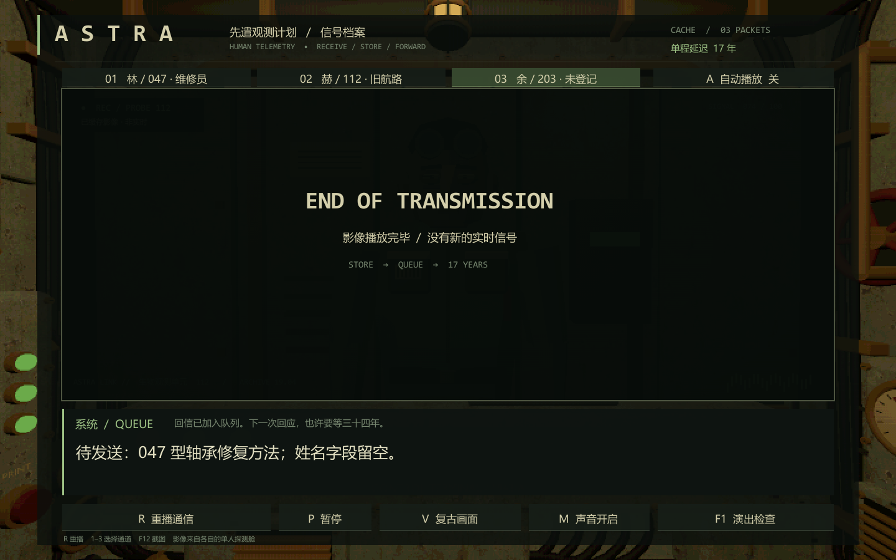
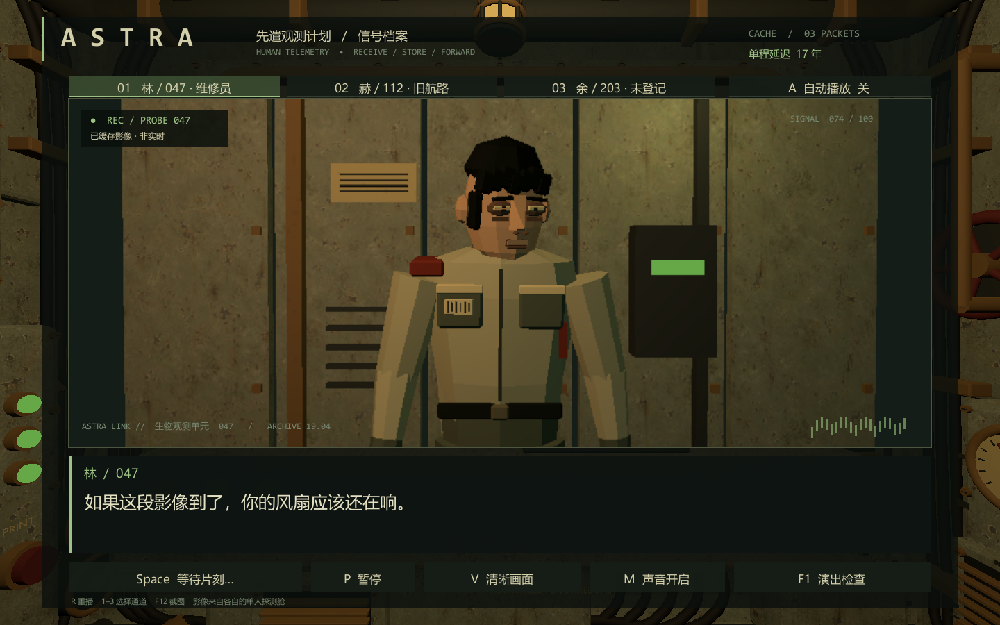

ASTRA / 人物站桩演出系统
调研与方案日期：2026-09-23。目标引擎：Unity 2022.3.62f1 / Built-in。目标平台：Windows。
决策摘要
采用「可编辑的演出节拍数据 + 单一会话状态机 + 角色表演适配器 + 独立字幕与镜头」结构。第一版使用少量可组合姿态、受限视线、呼吸、眨眼、离散口型和有意编排的停顿。重要动作由节拍指定，随机只用于没有叙事含义的微动作。
人物生产采用统一基础体型与服装模块，开放资产优先筛选 Quaternius；近景主角单独修脸、衣领、手和剪影。MakeHuman/MPFB 可生成成人底模，但应经过减面与重做表面；Kenney 更适合验证系统或远景。不要把任何「免费」网站等同于所有模型可再分发。
视觉沿用现有 Astra：煤灰、灰绿、旧搪瓷白、褐色黄铜，低饱和的工作服，少量信号红和荧光绿。用低分辨率渲染、有限明暗层级和轻度有序抖动统一表面；骨架、体型、头发、服装仍由美术控制。
阅读顺序
- 调研策划：演出为什么成立
- 人物素材与美术统一管线
- 技术架构与实现
- Demo 操作与验收
- 来源与证据边界
Demo 的叙事边界
「第 047 号探针 / 收不到的回信」是新写的验证用片段，不是既有世界观中的已定剧情。玩家始终独自留在舱内，看到的是其他探针的缓存通信包。三名角色不会同时挤入单人船舱，也不会因为玩家刚刚选择就跨光年实时回应。
演示包括三种人物气质、手动/自动播放、分支回信、受控静默、视线与手势、有限口型、正常/警戒照明、画风开关、降噪/减弱动态，以及检查模式。模型和声音由本项目脚本生成，原始 Blender 文件、导出 FBX、Unity 工程和 Windows 构建一起交付。
实施层级
| 层级 |
此次交付 |
后续生产阶段 |
| 演出 |
数据驱动节拍、分支、跳读、暂停/中断、重播 |
多会话调度、正式存档、完整本地化表 |
| 人物 |
三个原创低模角色，共用命名约定与表演驱动 |
手工精修头脸、连续蒙皮、更多服装模块 |
| 动画 |
骨骼姿态与程序化叠加；固定足底的原地动作 |
Animator/Playables 动作混合、接触 IK |
| 渲染 |
Built-in 人物分层光照、低分辨率、轻度抖动 |
与正式舱室材质统一、GPU 性能分析 |
| 验收 |
构建、状态/跳读/分支验证、实机截图 |
多显示比例与硬件矩阵、观众盲测 |
生产规模建议（估算，不是原作数据）
两人小组可按 10–15 个工作日规划第一个正式角色与一段 3 分钟内容：3–4 天定标准角色和镜头，3–4 天制作 8–12 个动作，2–3 天编排与工具，2–4 天试玩修正。后续背景角色通过模块组合加速；近景角色不能仅靠换色。先完成一个人在一个镜头下的 60 秒样板，再决定批量采购和制作。
调研策划：让站着的人也能演戏
1. 调研结论与证据级别
这两部作品值得借鉴的是低成本人物在具体空间里的存在感，而不是某个万能的 PS1 滤镜。
已核实：Mouthwashing 官方将其定位为第一人称太空货船恐怖叙事，强调船员关系和环境观察 [S01][S02]。Arctic Eggs 开发者在访谈中明确谈到，进食给人物停留与交谈提供理由，日常谈话比集中讲解世界历史更自然；人物设计亦有专门创作者参与 [S03][S04]。
视觉观察：参考资料中的 Mouthwashing 画面通过前景杂物、局部有色灯、人物姿态和下方字幕共同组织注意；Arctic Eggs 的群像截图用不同轮廓、站位和头部朝向区分人物 [S05]。这是截图能支持的结论。
实现提案：下文的状态机、时间值、骨骼层级、口型实现和镜头规则均为 Astra 的实现设计。没有查到足以确认原作采用何种 Animator、口型算法、IK 或对话插件的公开源码。此次没有对完整游戏逐帧测量，不能宣称原作有固定的头部转速或动画帧率。
2. 两种演出语法与 Astra 的取舍
| 维度 |
Mouthwashing 可借鉴方向 |
Arctic Eggs 可借鉴方向 |
Astra 决策 |
| 人物与空间 |
狭窄空间、物件遮挡、视点带来关系压力 |
任务把玩家留在人物附近；轮廓差异构成群像 |
人物保持在通信终端中，前景保留舱室硬件 |
| 文本功能 |
对话与环境共同建立不可靠感 |
短句、日常经验、无须解释全部世界观 |
一句维修琐事携带一个价值判断 |
| 演出焦点 |
将姿态、距离与光线作为叙事材料 |
角色本身有视觉记忆点 |
每个人一个稳定姿态，一个私人小动作 |
| 节奏应用 |
戏剧节点需要明显停顿或切换 |
普通交谈也能有趣，避免全程危机 |
日常语速为基准，关键句才留白 |
| 成本策略 |
借构图放大少量表演 |
借造型和短对话扩展角色数量 |
8–12 个动作可复用，关键句单独编排 |
此表是设计归纳，不是两款原作底层功能清单。
3. 人物不是对白播放器
角色在没有说话时也要有态度。分开设计「正在做什么」「想让对方相信什么」「避免暴露什么」。比如维修员看似在检查手套，其实是在回避对方关于返航的提问。不要用不停点头和大幅摆臂填满每句台词。
三种角色基准：
| 角色 |
身份与外形 |
默认姿态 |
视线规则 |
标志动作 |
| 林 / 047 |
旧米白维修服，胸前配给编号，黑色短发 |
肩轻微内收，双脚稳定 |
看镜头之后移向手部，重要句才直视 |
摩挲手套、低头停顿 |
| 赫 / 112 |
灰绿厚工装，护目镜抬到额头，较宽肩 |
偏重一条腿，头稍低 |
多看面板，偶尔回到镜头 |
指向仪表、简短点头 |
| 余 / 203 |
暗红修补外套，发丝不齐，较瘦轮廓 |
轻微侧身，手臂靠近身体 |
避开镜头后慢慢抬头 |
抬手到胸口、短促摇头 |
上述名字和设定均为 demo 新增提案。人物刻画不依赖残缺肢体、过度血污或直接搬用参考游戏角色。
4. 节拍：比一句台词更小的演出单位
每个节拍记录说话者、字幕、姿态、视线、手势、入句延迟、文字速度、句后停顿、镜头、光线，以及结束后目标。不是每个字段都必须变化。
建议初始范围（需要试玩调参）：
| 项目 |
起点 |
注意事项 |
| 中文逐字速度 |
14–22 字/秒 |
标点额外 0.12–0.4 秒；不靠超慢打字拖时长 |
| 入句反应 |
0.2–0.6 秒 |
配合视线转移；重要犹豫可更长 |
| 普通句后留白 |
0.35–0.8 秒 |
自动模式依据文字长度追加阅读时间 |
| 关键沉默 |
1.2–2.5 秒 |
明确视觉变化，让玩家知道系统未卡住 |
| 头部转动 |
水平约 ±25°，垂直约 ±12° |
超出范围用身体或切镜头，不让颈部追踪整个房间 |
| 普通手势 |
单句 0–1 个 |
完整包含预备、强调、回收，不能句末硬弹回 |
| 眨眼 |
约 3–6 秒一次，角色不同相位 |
恐惧凝视可以抑制；不能所有角色同时眨眼 |
| 嘴部 |
闭合/窄开/较开三档 |
仅标示说话节奏，明确不是精确中文音素同步 |
默认只让「一个大变化」主导一个节拍。若头、手、镜头、灯、音效同一帧一起突变，观众只会感到被工具推动。
5. 视线、身体与接触
先转眼/头，后转上身；转移视线需要动机。盯着镜头不应成为所有人的默认状态。对方是缓存影像时，角色看向的是录制端摄像头，不随当前玩家鼠标逐帧追踪，否则破坏延迟通信设定。
足底固定，呼吸驱动胸腔而非整个角色上下漂浮。肩颈与身体不要完全同相。站姿可有左右偏重，但脚在切换姿态时不能滑行。肘部弯折轮廓应在最低渲染分辨率下仍清楚。
拿杯子、按面板等接触动作需要「道具锚点 + 手部锚点 + 动作中的接触窗口」，正式版本用 IK 修正最终几厘米。第一版选择指向/摸胸/收手等无外物接触动作，避免把穿模接触包装成已完成的交互动画。
6. 镜头与构图
以胸像和中近景为主，头顶留白，眼睛落在画面上部约三分之一。第一人称不等于持续摇镜头。玩家的物理位置保持稳定，通信窗口内部可使用录制端的宽/近镜头切换。
远端通信画面和字幕分层：3D 世界可降低分辨率，字幕仍使用最终分辨率。中文每行控制在约 28–36 字，最多两行；较长内容切节拍，不缩字号。关键句避免同时显示选项或长帮助文本。
不要依赖颜色区别说话者；使用编号、名字与当前通信通道。灯光变化必须有场景内理由，如配给审计警告；不能每说一句伤感台词就整屏红闪。提供减弱动态/滤镜选项。
7. 声音
保留低频风机与很轻的通信噪声。逐字提示音按可见的字触发并限频，标点与空白不触发；补全文字不会爆发几十个音效。人物有不同音高与短音色，但不伪装成真实配音。句末关闭口型和短音，环境底噪继续。
正式录音版本由音频时间驱动口型与字幕 cue，不能让音频、打字机、动作三套独立计时。失焦或暂停时全部停住并可恢复；退出会话释放音源与镜头占用。
8. Demo 分镜脚本：收不到的回信
片段时长由阅读决定，自动播放约 1–2 分钟。三路是同一通信缓存目录中的不同录制包，不是实时三人会议。
| 节点 |
台词/事件 |
表演意图 |
技术落点 |
| 047-01 |
「如果这段影像到了，你的风扇应该还在响。」 |
先看面板，再看镜头；以日常设备建立联系 |
低头姿态、面板视线、慢回正 |
| 047-02 |
「我的停过一次。我用配给券垫住了轴承。」 |
小幅解释手势，句后收手 |
单次 explain 手势 |
| 047-03 |
「系统把它记作：消耗品自行修复。」 |
手停下，沉默先于情绪说明 |
suppress 微动作，hold |
| 112-01 |
「编号写反了。先拧蓝线下面那颗螺钉。」 |
另一个人的方法，不解释全部政治制度 |
通道切换、指向面板 |
| 203-01 |
「别告诉它，你还记得自己的名字。」 |
先避视，再直视；克制而非惊吓 |
guarded 姿态、close 镜头 |
| 分支 |
留下名字 / 仅发送维修记录 |
让玩家决定发送什么，不假装收到即时回话 |
选择事件进入待发送队列 |
| 结尾 |
显示回信已排队；单程延迟 17 年 |
让「刚才的相遇」变成时间尺度 |
分支终点、缓存影像结束 |
9. 交互规则
空格/点击继续：文字未完时只补全文字；文字已完且最低停顿已结束时才去下一节拍。补全不重复播放音效，不重放已经触发的手势。按住按键不连跳。
自动模式仍等待阅读窗口；选择节点始终等待真实玩家输入。暂停必须停止节拍计时、动作、口型、镜头和声音。中断或重播清理残留姿态、字幕、告警与分支结果。切换通道则取消当前会话并载入该角色的独立片段，不叠加两个调度器。
10. 评审方式
先做 60 秒盲测，请 3–5 位未看脚本的人说出：人物最想隐瞒什么、哪句最有情绪、有没有被动作抢走阅读注意力。若解释不一致，先改姿态和句间节奏，再增加动画。不能只以「动画在动」「测试全绿」判定演出成功。
验收重点：静音仍能读出迟疑；关字幕仍可认出正在说话者；暂停没有滑动或继续发声；连按不会错失选择；最低分辨率看得出鼻梁、眼窝、衣领与手的位置；皮肤没有被全局网点弄成砂纸。
来源编号见 05_来源与证据。
批量人物获取与美术统一
1. 先区分「开放资产」和「开源工具」
CC0/CC BY 描述资产可如何使用，GPL/AGPL 描述软件源码的条件，免费价格不等于开放授权。项目需要可编辑源文件、骨架兼容和能放入工程的再分发权限；这些维度应逐项记录。以下信息按 2026-09-23 官方页面核实，实际下载仍以所选包附带的授权文件为准。
| 来源与直接入口 |
已核实的内容 |
对 Astra 的适配判断 |
批量使用方式 |
| Quaternius Ultimate Modular Men |
CC0；11 个角色、每个 24 动画；可交换模块；FBX/OBJ/Blend 等 [S06] |
很适合系统原型；体型和脸需要收敛，不能直接视为 Mouthwashing 风格 |
先统一一个骨架，按头/躯干/腿/配色组合；保存整包授权 |
| Quaternius Universal Base Characters |
CC0；6 种基础人物、20 款头发；Humanoid 骨架；平均约 13k 三角面；免费与 Source 版本内容不同 [S07] |
成人近景的起点；并非极低模，需要定向减面；官方 Unity 样例为 URP，不能原样复制材质到本项目 |
Regular 比例优先；先做一套 Astra 服装，Source 的 .blend 是否包含在下载档次中要确认 |
| Kenney Protagonists / Survivors |
两页均标注 CC0，分别列出 8 个文件 [S08][S09] |
轮廓偏简化/卡通，适合占位、远景和工具验证；近景改造成本可能高于重做一个头 |
官方整包下载；不要把文件数量当成独立骨架数量 |
| MakeHuman / MPFB |
工具开源；核心资产 CC0；MPFB 为 GPL，MakeHuman 为 AGPL [S10] |
适合批量成人体型与年龄差异；导出后仍需服装、拓扑和材质工作 |
保存参数预设，生成统一站姿与骨架；社区衣服/头发另查授权，不能自动继承核心 CC0 |
| OpenGameArt |
开放艺术聚合库，各投稿有自己的授权与署名要求 [S11] |
可补工作服、发型、道具；跨作者比例/骨架一致性较弱 |
以具体条目建清单；优先 CC0 或可满足署名要求的 CC BY；不把全站一起打包 |
| Mixamo |
有 Adobe ID 可免费使用，人物与动画可用于商业项目，自动绑定面向双足人形 [S12] |
动画与自动绑骨的实用补充，但不是开放素材库；近景演出需裁剪、降幅、重定向 |
官方界面下载需要的片段；本方案不抓取账号，不把原始库作为开放素材再分发；账号地区可用性按 FAQ 确认 |
| Poly Haven / ambientCG |
Poly Haven 官方资产为 CC0；现有 Astra 材质来源记录包含 ambientCG PaintedMetal012 [S13][S20] |
主要补表面、道具和环境；不作为批量绑定人物的主要来源 |
按米制缩放后使用；Astra 本轮继续使用已有贴图，不重新购买 |
推荐顺序：Quaternius 模块化原型 → 定一名近景人物 → 共用体型/服装库 → 背景角色变体。若近景成人比例比快速搭建更重要，MPFB 是另一条起点。两条路线不宜在第一批中混用，否则动作、手脚尺寸与贴图尺度会分裂。
2. 有多少角色才算「批量」
例如 3 个身体轮廓 × 4 套工作服模块 × 5 个头脸/发型 × 3 套配色可以产生 180 种组合，这是组合空间，不是 180 个有辨识度的角色。剧情人物仍应固定组合、独特剪影、动作习惯和一件私人标志物。
建立 12 个角色先导批次：4 名近景、4 名普通通信人物、4 名背景人物。先检查 12 个在同一镜头里是否属于同一游戏，再扩展。身体比例、面部信息量和动作幅度的统一通常比三角面数统一更有效。
建议基线（Astra 的生产预算，不是参考游戏实测）：
| 级别 |
三角面 |
材质/贴图 |
骨骼与脸 |
| 近景叙事角色 |
3k–8k |
1–3 个材质；主体 256–512，脸可单独 128–256 |
约 20–45 骨骼；眼皮与 3–5 嘴形 |
| 普通通信人物 |
1.5k–4k |
1–2 个材质；256 级主贴图 |
15–30 骨骼；头、眼皮、下颌即可 |
| 远景人物 |
500–1.5k |
共用色板/图集 |
保留剪影，按投影尺寸选 LOD |
本 demo 约 2.5k 三角面/人、13 骨骼，使用刚性权重和多色材质便于检查系统；材质槽偏多，是样板而非已完成的批量性能标准。正式版本应将色块合进图集，减少 draw calls。
3. Shader 能把普通模型变成同风格吗
可以统一表面和照明，不能单独统一角色造型。 一个写实扫描头即使用 320×180 渲染，也仍有写实体型、发丝和高密度轮廓；一个卡通大头也不会因为加网点变成沉郁成人。
| 技术 |
能改善什么 |
不负责什么 |
推荐 |
| 调色/有限色板 |
把材质纳入灰绿、米白、褐色体系 |
服装年代、身体比例 |
必须做，肤色保留单独范围 |
| 限制高光与 PBR 细节 |
避免皮肤蜡感和新塑料反光 |
高模轮廓 |
必须做；皮肤/衣料不照抄金属参数 |
| 明暗分层 |
保持块面、少量大层级 |
正确光位、接触阴影 |
人物建议 4–6 级；避免连续光下条带跳变抢眼 |
| 有序抖动 |
缓和色阶过渡；低成本粗粝感 |
「贴图像素」和真实减面 |
4×4 Bayer、固定像素网格、弱强度；禁止全屏时间随机闪烁 |
| 低分辨率 RenderTexture |
控制轮廓与细节投影尺度 |
源模型复杂度 |
远端摄像机真正低分辨率；UI 独立高分辨率 |
| Flat normals/面法线 |
强化几何块面 |
减少三角面数 |
对衣料大面有用；面部不要全变碎玻璃 |
| Decimate / 手动重拓扑 |
降低轮廓与顶点复杂度 |
美术判断、正确面部拓扑 |
先保脸/手/关节，按区域处理；重新验收权重 |
| 顶点屏幕吸附 |
模拟顶点摇晃/跳格的复古痕迹 |
提高表现质量 |
默认关闭；近景眼鼻和手部特别容易抖碎 |
| 仿射 UV/透视扭曲 |
特定旧硬件纹理不稳定感 |
Astra 的必要风格 |
不作为默认；人物脸、文字和 UI 不使用 |
| 降动画采样率 |
强化刻意的姿态切换感 |
停顿与表演内容 |
如采用，仅量化身体动画时钟；相机/输入/字幕保持流畅 |
不要同时把贴图降到极低、色阶降到极低、网点拉满、顶点抖动拉满。先统一造型和材料，再做两个可控风格旋钮。清晰模式用于诊断模型与光线，不能把滤镜关闭后的差异误当成「换了高模」。
4. 与已有项目的具体关系
本项目读取了 Project-Astra/美术/样板首版_保留锈蚀/README.md 的最新确认：保留锈蚀和斑驳。早期美术规范中「减少锈蚀」不是这次执行默认值。
工作色板：煤灰 #202521、舱壁灰绿 #596452、旧搪瓷白 #C8BE99、褐色黄铜 #8C7044、安全暗红 #983E31、荧光浅绿 #A8CE89、异常冷青 #609BA5。衣料与皮肤采用比舱壁更低的高频信息量，旧化集中在袖口、膝盖、衣领和补丁上。人物可以干净一些，但不能像光亮新品。
Demo 复制用户现有舱室 FBX、WornMetal Shader 和已有表面贴图到独立工程；不修改源项目。人物使用新的 Character Shader，采用相同的工业色彩、克制高光与轻度网点；不直接让皮肤使用金属锈蚀 Shader。
5. 可执行的批处理流程
- 入库清单：为每个包保存作者、官方下载页、许可证文本、下载日期、原始文件 SHA-256、可分发范围。将原始资产放只读目录。
- 测量：统一 1 Unity 单位 = 1 米，脚底 y=0，前向约定一致；检查法线、负缩放、骨架与动画是否齐全。清理摄影灯和展示相机。
- 造型整编：比例修改在正式绑定前完成。头、手、衣领单独给预算；改发型、外套和轮廓，不能只换颜色。
- 拓扑：角色脸/手/弯曲关节保留；静态道具可自动 Decimate。已绑定角色只在复制件上操作，测试权重与 shape key，不能把统一 90% 减面当成验收。
- 纹理：先烘焙/重绘干净的 Base Color，减少皮肤微法线和镜面；统一 texel density。贴图中的烘焙明暗不应与游戏灯光重复形成双阴影。
- 绑定/动作：标准 T/A pose；Humanoid 用 Avatar 重定向，异形用 Generic；关闭根运动；添加 Head/GazeTarget/HandSocket 等语义锚点。
- 自动导入：检查 UV、材质数、纹理大小、sRGB/Linear、Wrap、Normal Map 类型、动画裁剪与命名；导出报告，不静默修掉所有错误。
- 同机位验收：正常、警戒、暗场三种光；宽/近两镜头；站立、指向、收手、低头、嘴开闭。检查轮廓、穿模、足底、眼皮和字幕遮挡。
Tools/batch_prepare.py 提供本地清单驱动的预处理起点，支持 FBX/OBJ/GLB/GLTF/Blend，输出独立 FBX、Blend 与统计。默认只对无骨骼静态网格减面，带 shape key 的网格跳过减面并记录；绑定人物需要明确启用选项且仍须人工验收。它不下载资产，也不声称自动重拓扑、自动烘焙或完成美术统一。
此工具不会替你收集外部贴图依赖，也不导出动画片段；入库时仍需一起保留原始纹理和动画文件。此次实机批处理只验证了原创 FBX 输入，其他格式提供导入代码路径，尚未逐格式建立验收样本。
& 'F:\Blender\blender.exe' -b --python .\Tools\batch_prepare.py -- --manifest .\Source\asset_manifest.example.json --output .\PreparedAssets
6. 数据与资产验收字段
每个 prefab 至少带：characterId、rigProfile、licenseRecord、bodyVariant、materialProfile、portraitCameraAnchor、headBone、mouthDriver、defaultPose。故事脚本只写角色 ID，不引用 FBX 层级中的临时名字。
以下任一问题退回：正负缩放混用导致转向相反；面部近景 UV 裂缝；眼白成为纯白光块；表情把下巴拉开；人物与舱壁像不同曝光；衣袖/手势穿胸；待机足底滑动；配给编号不可读；同套动画在不同体型上明显越界。
来源编号见 05_来源与证据。
技术设计与代码架构
1. 与现有工程兼容的选择
保持 Unity 2022.3.62f1、Built-in Render Pipeline、C#、Windows standalone。此次是独立工程，可以从 UnityProject 打开，或直接运行 Build/ASTRA Performance.exe。没有依赖 Cinemachine、Timeline、第三方对话插件或在线服务；不需要访问正式游戏存档。
对话内容采用 PerformanceSequence : ScriptableObject；初次构建生成 Data/SignalArchive.asset，后续重建保留作者在 Inspector 中修改的内容。新增一行对白不需要修改播放器源码。
2. 依赖图
flowchart TD
Data[PerformanceSequence / Beat 数据] --> Session[PerformanceSession 会话状态机]
Input[键盘和按钮] --> Director[PerformanceDirector 生命周期协调]
Director --> Session
Session -->|Entered / Revealed / Ended| Director
Director --> Actor[ActorPerformance 骨骼适配器]
Director --> Camera[通信摄像机 / 灯光]
Director --> Audio[PerformanceAudio]
Session --> View[PerformanceView 字幕与选择]
Camera --> RT[RenderTexture]
RT --> View
RT --> Screen[舱室屏幕材质]
Verify[编辑器验证 / 运行时 QA] --> Session
| 文件/模块 |
责任 |
禁止承担 |
| Core/PerformanceSequence.cs |
可序列化节拍、角色/姿态/视线枚举、分支 |
输入、逐帧动画 |
| Core/PerformanceSession.cs |
计时、文字推进、选择、暂停、中断；发出语义事件 |
相机、音源、Transform、Input、Time API |
| Runtime/PerformanceDirector.cs |
创建会话、订阅事件、角色切换、输入、暂停与资源释放 |
再实现一套打字机或对话图 |
| Presentation/ActorPerformance.cs |
映射语义 cue 为骨骼姿态、视线、手势、眨眼和口型 |
推进故事节点 |
| Presentation/PerformanceView.cs |
输出中文、按钮、信号标记、检查面板 |
修改骨架、直接选择剧情分支结果 |
| Presentation/PerformanceAudio.cs |
短音/底噪、限频、暂停、静音 |
根据自己的时钟决定下一句话 |
| Presentation/SignalRenderer.cs |
RT 的后处理和释放临时纹理 |
对 UI 的点击区做曲面变形 |
| Editor/PerformanceBuild.cs |
场景生成、资产绑定、构建入口 |
正式会话的运行时逻辑 |
| Editor/PerformanceVerification.cs |
无 UI 的时序/状态/内容边验证 |
宣称艺术效果已经获用户认可 |
| Runtime/PerformanceCapture.cs |
渲染进程验收、截图、设备记录 |
修改正式 Astra 的存档 |
Core 的数据定义借用 Unity 的序列化属性，状态机本身没有 UnityEngine API 调用。若要放到纯 .NET 程序集，可把 DTO 与 ScriptableObject 包装再拆开；当前没有假装它已是独立发布的 .NET 包。
3. 状态机与时间规则
stateDiagram-v2
[*] --> Inactive
Inactive --> Lead: Start
Lead --> Typing: 入句延迟结束
Lead --> Hold: 补全
Typing --> Hold: 文字结束 / 补全
Hold --> Ready: 无选项
Hold --> Choice: 有选项
Ready --> Lead: 继续 / 自动
Choice --> Lead: 选择下一节点
Ready --> Complete: 无后继
Choice --> Complete: 选择终点
Lead --> Cancelled: Cancel
Typing --> Cancelled: Cancel
Hold --> Cancelled: Cancel
Ready --> Cancelled: Cancel
Choice --> Cancelled: Cancel
暂停是正交开关，不额外复制一套状态。Tick(dt) 接受外部时差，暂停直接不消费 dt；继续不补算暂停期间的时间。应用失焦暂停；QA 参数明确允许后台验证，普通模式没有这个例外。
时间过冲保留在同一节拍内部：大帧到来时补齐应出现的字符，不丢失标点停顿。自动模式在 Ready 处推进一次，避免一次大帧跨过整段剧情。每次开始/取消递增 Generation，给未来异步加载或配音回调提供失效标识；当前没有异步资源加载。
补全文字只进入 Hold，不补发 Revealed，不重新进入节点。手势由 Entered 单次触发。连按 Space 不越过最低 hold；Choice 阶段 Advance 无效；Choose 验证状态与索引，选中后立即离开 Choice，不能重复提交。
文字使用 StringInfo.GetTextElementEnumerator，避免把 UTF-16 代理对或组合字符切半。字体来自本机 Microsoft YaHei / CJK fallback，支持当前 Windows 中文；没有复制 Windows 商业字体文件。跨系统发布应加入经授权的 CJK 字体与测试，复杂 Unicode/emoji 的显示仍受字体支持限制。
4. 数据模式
PerformanceBeat {
string id; ActorId actor; string text;
PoseId pose; GazeId gaze; GestureId gesture;
float lead; float charactersPerSecond; float hold;
float closeUp; bool alarm; bool stillness;
string next; ReplyChoice[] choices;
}
节点 ID 稳定而且唯一；文本修改不改变 ID。构造时拒绝重复 ID、缺失后继、非法速度、空选择。正式本地化时改为 textKey，由 SubtitlePresenter 查询文本；动作 cue 留在节点上，不绑定中文的第 12 个字。需要随语义词同步时增加命名标记，如 gesture:repair，每个语言版本标出对应时间，而不是复制字符索引。
当前角色 ID/姿态等是枚举，适合 3 人样板。生产扩展为 ScriptableObject 注册表或稳定字符串 ID，避免每加一个角色就改多处 switch。Director 的演员数组现在按 ActorId 顺序绑定，场景构建器保证顺序；导入正式项目时应改为显式 Dictionary 注册并验证唯一 ID。
5. 表演混合与骨骼所有权
现有适配器采用真实 Armature + SkinnedMeshRenderer，但每块几何的权重为单骨骼刚性权重。基础姿态、头部偏移、手势包络在同一个 LateUpdate 中合成并写回，骨盆和腿保持稳定。约 2 秒手势有预备/强调/回收，局部旋转平滑归位。呼吸仅改变胸部的小角度，避免全身漂浮。
绑定时缓存参考旋转，不每帧查找 Transform。口型由 Revealed 驱动 0.09 秒短脉冲，离散幅度表示说话节奏；标点、补全文字与暂停不产生脉冲。眨眼有角色不同相位。缓存影像使用 Lens/Panel/Down/Away 等录制端方向，不追踪玩家鼠标。
正式动画扩展：
- Base 层：站姿循环与不带位移的姿态切换。
- Gesture 层：用 AvatarMask 或 AnimationLayerMixerPlayable 覆盖上身，gesture clip 保留回收段。
- Gaze 层：头/颈/眼权重分别约束；Humanoid 可用 OnAnimatorIK，Generic 自定义骨骼适配器。
- Contact 层：握物/按面板的末端 IK，只在接触窗口生效。
- Face 层：眼皮、表情、口型分离，禁止多个脚本同时写下颌。
Unity 官方 Playables 和 IK 文档支持上述扩展路径 [S14][S15]。这些扩展没有在样板中假装已经完成。不能同时保留当前程序化脚本与 Animator 对相同骨骼无约束写入；切换适配器时要明确最终写入顺序和蒙版。
6. 摄像机、渲染与输入
两套摄影机：主摄像机拍舱室；远端摄影机拍第 8 层人物与隔离布景，写入 864×432 RenderTexture。主摄像机排除此层，远端光源使用同样 culling mask；远端相机没有第二个 AudioListener。
主要人物画面在最终 GUI 中合成，字幕不经过低分辨率采样。远端 RT 的低分辨率确实降低那一路像素渲染规模；主舱室先全分辨率绘制再降采样，因此不能声称主舱室几何成本下降。
SignalGrade 在显示色空间量化后转回线性；固定 4×4 Bayer 不随时间随机跳动。清晰/复古切换同时作用于人物 Shader 与两路相机，但它不是换高低模。扫描线只用于通信图像。不能在 URP 直接沿用 OnRenderImage，迁移需要 ScriptableRendererFeature/Blit Pass [S16]。
Character Shader 对每盏光的漫反射项使用 floor(NdotL * (bands - 1) + 0.5) / (bands - 1)。多光叠加与环境光之后，最终图像不是严格的五种亮度。风格开关使用 Renderer 的 MaterialPropertyBlock，不修改共享材质资产。
材质表面数据：Albedo 标为 sRGB，法线设 Normal Map，roughness 以 Linear 导入。正式角色图集 Point/低分辨率与 mipmap 的选择以实际投影测试决定，不一概关闭 mipmap；远距离闪烁时应保留 mip 与适当 LOD bias。[S18]
屏幕 UI 使用 1440×900 虚拟坐标按比例缩放，保持点击区域与绘制坐标一致。Space/Enter 与继续按钮共用 Session.Advance，选择按钮/数字键共用 Session.Choose。提供暂停、静音、减弱动态、重播和中断。项目未新增玩家行走系统；这是固定中心视点的演出验证，不是可探索新关卡。
7. 音频生命周期
本 demo 的语音提示和环境声为生成波形，没有真人配音。Revealed 驱动轻短音；0.065 秒限频防止长帧追赶形成爆音；角色换人时停止旧短音。暂停用 AudioSource.Pause/UnPause，退出清理运行时生成 AudioClip。正式接入语音时由 AudioSettings.dspTime / 配音时间轴驱动 cue，文字作为呈现，不能反过来逐字剪配音。
8. 并发、取消、错误与存档
同一 Director 同时只有一个 Session。新通道会重置旧表演和待发送内容。所有事件有对应取消订阅，RT 和临时纹理释放，不保存旧会话引用。缺少骨骼直接抛出可定位错误，而不是默默退化到 T pose。
当前回信只存在内存，不写磁盘，也不读取正式 Astra 数据。这满足演示分支验证，不是正式存档系统。生产存档只保留稳定 sequenceId、beatId、剧情标记、发送队列与版本号；通常恢复到节拍起点即可。恢复中途配音另存音频位置，不能序列化 Transform 或 Coroutine。剧情副作用放独立 command layer，以 eventId 去重，避免读档/重播重复扣氧气或发信。
9. 接回 Astra 的路径
- 将 Performance 核心和表现层移入独立命名空间，避免替换现有 CabinController/Computer。
- CabinComputer 新增「通信档案」入口；打开时由现有输入模式阻止舱室 Q/E、战斗键穿透。
- 主摄像机保持现有 CabinPresentation；远端图像当作电脑窗口中的内容绘制。不要在同一主相机上再叠第二套整体像素化。
- 以接口接入资源变化：
ITransmissionQueue.Enqueue(reply)、IStoryFlags，当前 PendingReply 替换为真实队列。
- 会话结束/关闭窗口调用 Cancel，并恢复此前镜头和输入状态。游戏切场景、断电、死亡也走同一个终止入口。
- 先回归原有电脑、转墙、战斗与窗外演出，再扩展更多角色。独立 demo 的测试通过不等于原游戏集成回归通过。
10. 性能与生产限制
缓存 Transform 与材质引用，不在 Update 创建材质。可见通道只激活一个人物，其余停用。角色目前多材质槽，正式批量必须做图集和 draw call 预算；少人物不需要 ECS。不要为追求规模提前引入多人会话并行、复杂图编辑器或完整行为树。
尚未实现：正式动作 clip/根运动/接触 IK、精确音素同步、生产级角色图集、配音、本地化资源管理、存档迁移、移动平台/URP。测试与截图记录见 04_Demo与验收。
Demo 操作、复现与验收
1. 开始体验
在根目录双击 Launch.cmd，或运行 Build/ASTRA Performance.exe。整个 Build 文件夹需要保留，不能只拷贝 EXE。
建议先按默认通道逐句阅读，再打开自动播放，最后按 F1 查看演出状态。体验的核心不是操作复杂度，而是同一人在不同句子里的注视、收手和静默，以及回信需要漫长时间才能抵达的落差。
| 操作 |
行为 |
| Space / Enter / 继续按钮 |
未显示完时补全文字；显示完且停顿结束后前进 |
| A |
自动/手动阅读切换；自动模式不替玩家选择 |
| 1 / 2 / 3 |
普通状态切换通信通道；选择时 1 / 2 选择回复 |
| P / Esc |
暂停/恢复；应用失焦也会暂停 |
| R |
重播当前通道，清除之前尚未保存的回信 |
| V |
复古 / 清晰画面比较 |
| M |
静音 / 恢复 |
| F1 |
检查面板：节拍、状态、姿态、视线、手势、时间 |
| 检查面板「查看全身」 |
查看下肢稳定性和手势轮廓 |
| 检查面板「减弱动态」 |
停用环境微动作并取消叙事推近；明确手势仍然保留 |
| 检查面板「中断会话」 |
清理对白与人物表演，R 可重播 |
| F12 |
保存当前帧到本应用 LocalLow 下 Screenshots |
| Alt+F4 / 窗口关闭 |
退出程序 |
该程序没有实时联网或发送消息。两条「回信」分支只是本地内存中的剧情演示，不会联系任何人，也不会改写正式 Astra 存档。
2. 编辑内容
打开 UnityProject，进入 Assets/Performance/Scenes/Performance.unity，按 Play。选择 Assets/Performance/Data/SignalArchive.asset，可直接编辑：对白、角色、姿态、视线、手势、入句/留白、镜头、灯光、后继节点和选项。请保持 ID 唯一，next 必须指向已存在 ID，空 next 代表结束。
菜单 Astra Performance/Rebuild scene 重建场景，保留既有 SignalArchive 数据。Build Windows + verify 同时运行核心检查并构建。首次生成的数据来自 PerformanceBuild.MakeSequence；修改那段默认数据不会自动覆盖已经存在的作者资产。
人物源文件：Source/Astra_Performers.blend；单人 FBX：Assets/Performance/Models/Lin047.fbx、He112、Yu203。Blender 文件中的三人横向排列便于编辑，单独导出 FBX 保持人物脚底原点。角色绑定为 13 骨骼刚性蒙皮，系统动作不存为 Blender 动画 clip。
3. 命令行复现
默认路径匹配本机安装：Unity F:/Unity/Installs/2022.3.62f1/Editor/Unity.exe，Blender F:/Blender/blender.exe。迁移到另一台电脑可通过参数覆盖。
# 只重新生成场景、验证并构建
powershell -ExecutionPolicy Bypass -File .\Rebuild.ps1
# 先重新生成原创人物，再构建
powershell -ExecutionPolicy Bypass -File .\Rebuild.ps1 -RegenerateCharacters
# 启动可见玩家，自动覆盖关键节点、截图并退出
powershell -ExecutionPolicy Bypass -File .\Verify.ps1
# 本地素材预处理样本，输出目录必须不存在同名转换结果
& 'F:\Blender\blender.exe' -b --python .\Tools\batch_prepare.py -- --manifest .\Source\asset_manifest.example.json --output .\PreparedAssets
# 将最新 Markdown 文档重新生成为离线 HTML
python .\Tools\build_handbook.py
Unity CLI 已安装，但其安装枚举未列出已有 Editor，因此本项目使用已核实的 Editor 原生命令行 -batchmode -executeMethod。这仍是可复现的 Unity CLI 构建流程。沙箱内的首次启动无法读取本机许可证，随后在授权的正常用户环境构建；没有更改 Unity 许可证配置。
图形验收需要可见窗口。隐藏/最小化玩家可能跳过图形呈现而产生黑帧，不能将这种截图作为通过证据。Verify 默认打开演示窗口，完成后自动退出；不会关闭其他应用。
4. 验收的含义
核心检查覆盖：唯一 ID/后继引用、有效速度、逐字时序、跳读不重复动作/音效、最低停顿、暂停、两种回信、重复提交、取消/重播、Unicode 文本单元、不同更新频率、较大 dt、完整默认剧情与 Unity 脚本资源绑定。
运行时检查覆盖：独立 Player 载入、实际骨骼绑定、RT 创建、暂停冻结、声音暂停、选择与结束、滤镜切换、中断清理、受支持 Shader、异常与实机截图。自动调用的是与 UI 共用的会话方法，不等同于逐个物理键盘/鼠标点击的人工测试。
图像检查与最终结果记录在下方和 QA 目录。此处没有将 60 FPS 或某类低端 GPU 性能标为已验证，也没有宣称三款角色已达商业美术成品质量。
本次实际结果
| 验证 |
结果 |
证据 |
| Unity Windows x64 构建 |
成功 |
QA/build-summary.txt |
| 核心状态/时序/资源绑定检查 |
28 项通过 |
QA/core-verification.txt |
| 独立玩家运行、渲染与流程检查 |
23 项通过 |
QA/runtime/runtime-verification.txt |
| 关键画面 |
10 张引擎实机截图；已检查人物正面、三人差异、字幕、选择与结束 |
QA/runtime/*.png |
| Blender 人物导出 |
2682 / 2482 / 2630 三角面，均为 13 骨骼 |
Source/character_manifest.json |
| 素材批处理样本 |
成功保留骨架，跳过受保护人物的自动减面并导出审计 |
QA/AssetPreparation/batch_report.json |
验证设备：Windows 11、NVIDIA GeForce RTX 4070 Laptop GPU，1440×900；Unity 2022.3.62f1。自动化共 51 个断言通过，艺术表现另经截图检查。没有把这种单机结果推广为最低配置保证。
首次 Player 验证暴露的序列化脚本绑定、未激活演员初始化已修正；可见画面检查暴露的 FBX 朝向、网格法线与眼皮局部轴已修正。最后两张对照在同一姿态/机位冻结时钟，只切换画风，避免用不同动作混淆渲染差异。






5. 目前明确保留的边界
- 三位角色为约 2.5k 面的原创系统样板；脸、手、衣褶仍需正式美术精修。
- 口型表示文字节奏，不是语音音素识别；没有真人配音。
- 动作使用骨骼层级和程序化包络，没有完整 mocap 动作库与道具接触 IK。
- 开放素材推荐已核查官方资料；第三方角色包没有下载并完成全部风格改造，因此不把「批量库可用」说成「所有资产已经入库」。
- 回信只保留本次运行期间，不构成正式保存/读档系统。
- 独立工程验证不覆盖源 Astra 的全部战斗、导航和窗外演出功能。
来源、证据边界与追溯
访问日期：2026-09-23。网页只作研究依据，不作为安装脚本或授权命令。没有反编译、提取或再分发 Mouthwashing / Arctic Eggs 游戏资源。
参考游戏
关于 Mouthwashing 的采访检索没有给出足够可信的具体演出技术披露。因此本文没有写「原作确实用了三帧贴图嘴」「原作使用某一对话插件」等未经确认的结论。也没有把别人的同人重建作为原作源码。
人物与素材
实现依据
本地项目依据与优先级
Project-Astra/游戏概念文档.md：AI 统治、人载探针、单人廉价舱、延迟通信。Project-Astra/PROJECT_MEMORY.md：四面墙、固定中心观察、既有操作与技术版本。Project-Astra/美术/Project_Astra_美术基调与资产制作规范_v1.0.md：色板、材质和几何方向。Project-Astra/美术/样板首版_保留锈蚀/README.md：更新的用户确认，保留锈蚀；比早期「净化表面」建议优先。Project-Astra/3D Demo/UnityProject/ProjectSettings/ProjectVersion.txt 与 Packages/manifest.json：实际 Unity 版本与模块。- 已查看 A_after.png 和两张参考游戏截图，并阅读 WornMetal Shader、CabinBuild、模型生成脚本中的屏幕定义。
新增人物、台词、镜头参数、时间预算、技术结构和测试要求均为本次方案，不冒充上述游戏的开发文档或 Astra 已有既定剧情。